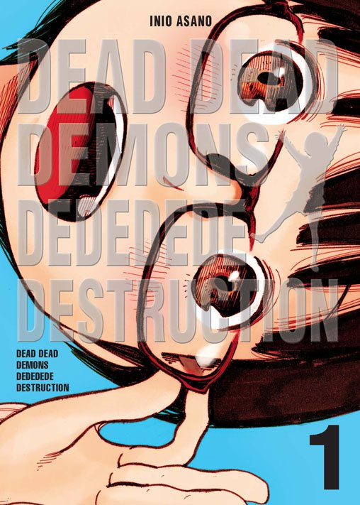
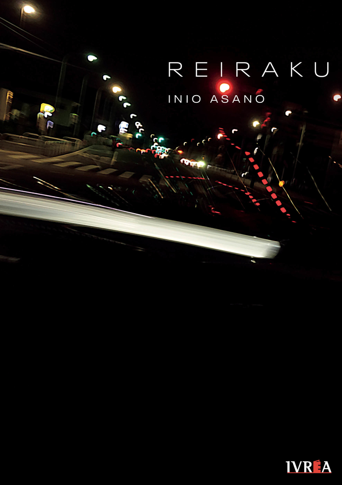
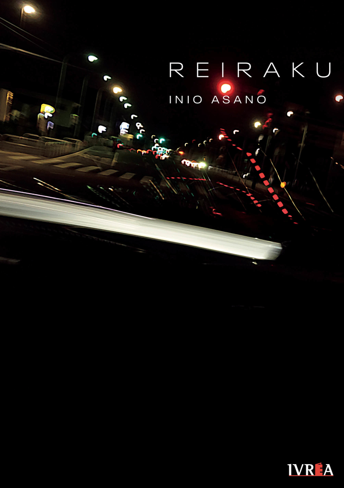

Inio Asano (Ibaraki, Japón, 1980) se ha convertido en los últimos años en uno de los artistas más reconocidos del manga, tanto por su peculiar sensibilidad como por la originalidad de su trabajo.
Según ha comentado en entrevistas, empezó a dibujar fanfic de los cómics más populares del momento en el instituto. Animado por sus compañeros, envió muestras de su trabajo a la revista Big Comic Spirits, toda una institución en Japón, en la cual fue admitido con sólo diecisiete años. Allí, tuvo que pasar unos años de aprendizaje, trabajando como asistente del mangaka Shin Takahashi. Hacia el 2000, empezó a publicar historias cortas, que serían recopiladas en dos tomos bajo el título de What a wonderful world, en las que refleja la desorientación de los jóvenes japoneses de su generación, víctimas de la crisis económica, obligados a seguir viviendo con sus padres y a ocupar empleos.
Según ha comentado en entrevistas, empezó a dibujar fanfic de los cómics más populares del momento en el instituto. Animado por sus compañeros, envió muestras de su trabajo a la revista Big Comic Spirits, toda una institución en Japón, en la cual fue admitido con sólo diecisiete años. Allí, tuvo que pasar unos años de aprendizaje, trabajando como asistente del mangaka Shin Takahashi. Hacia el 2000, empezó a publicar historias cortas, que serían recopiladas en dos tomos bajo el título de What a wonderful world, en las que refleja la desorientación de los jóvenes japoneses de su generación, víctimas de la crisis económica, obligados a seguir viviendo con sus padres y a ocupar empleos.
Su reputación creció gracias a Nijigahara Holograph (2005), que sería la primera obra de Asano publicada en España (por Ponent Mon en 2009 y luego por Milky Way en 2014). Se trata de una obra ya totalmente personal: muy compleja, extremadamente crítica con la sociedad japonesa, llena de elementos simbólicos, en la que nos presenta a varios personajes que arrastran graves traumas heredados de su infancia y juventud. A este manga tan oscuro, le siguió la que se ha convertido, sin duda, en su obra más popular, Solanin (2006), en la que muestra a varios jóvenes que tras el paso por la universidad tratan de abrirse paso en el mundo laboral sin perder sus sueños e ilusiones. Se convirtió en un enorme éxito, tanto dentro como fuera de Japón, hasta el punto de ser adaptada al cine en 2010 y que el grupo Asian Kung Fu Generation le dedicó una canción (cuya letra escribió el propio Asano). Además, siguió publicando historias cortas recopiladas en tomos como El barrio de la luz y El fin del mundo y antes del amanecer.

A continuación, Asano emprendió la que es, hasta la fecha, su obra más ambiciosa y, sin duda, su obra maestra: Buenas noches, Punpun , editada entre 2007 y 2013 en trece tomos. Un magnífico slice-of-life en la que nos relata la existencia de un joven, Onodera, de su infancia a la edad adulta, y cómo hace frente a una familia disfuncional, sus complicadas elecciones amorosas y su propio aprendizaje vital. En 2013 también llegaría La chica a la orilla del mar, protagonizada por unos adolescentes cuyas relaciones están basadas en el sexo y en el nihilismo.

Las obras más recientes de Asano que han llegado a la actualidad son la surrealista Dead Dead Demons Dededededestruction cuyos personajes principales son un par de niñas en un Tokio en el que se ha producido una bastante indescriptible invasión extraterrestre, y Reikaru , otro de sus mangas lúgubres, cargados de angustia existencial, en el que sigue los pasos a un mangaka de mediana edad, que ha perdido la inspiración y ve cómo se hunde su matrimonio.
A continuación, Asano emprendió la que es, hasta la fecha, su obra más ambiciosa y, sin duda, su obra maestra: Buenas noches, Punpun , editada entre 2007 y 2013 en trece tomos. Un magnífico slice-of-life en la que nos relata la existencia de un joven, Onodera, de su infancia a la edad adulta, y cómo hace frente a una familia disfuncional, sus complicadas elecciones amorosas y su propio aprendizaje vital. En 2013 también llegaría La chica a la orilla del mar, protagonizada por unos adolescentes cuyas relaciones están basadas en el sexo y en el nihilismo.
Las obras más recientes de Asano que han llegado a la actualidad son la surrealista Dead Dead Demons Dededededestruction cuyos personajes principales son un par de niñas en un Tokio en el que se ha producido una bastante indescriptible invasión extraterrestre, y Reikaru , otro de sus mangas lúgubres, cargados de angustia existencial, en el que sigue los pasos a un mangaka de mediana edad, que ha perdido la inspiración y ve cómo se hunde su matrimonio.
Dead dead demon's dededede destruction:

Reiraku: 
Solanin:
What a Wonderful World:
Nijigahara Holograph:
Oyasumi Punpun:
Heroes:
Ctrl + T
La Chica a la orilla del mar:
El barrio de la luz:
Reiraku: 
Solanin:
What a Wonderful World:
Nijigahara Holograph:
Oyasumi Punpun:
Heroes:
Ctrl + T
La Chica a la orilla del mar:
El barrio de la luz: